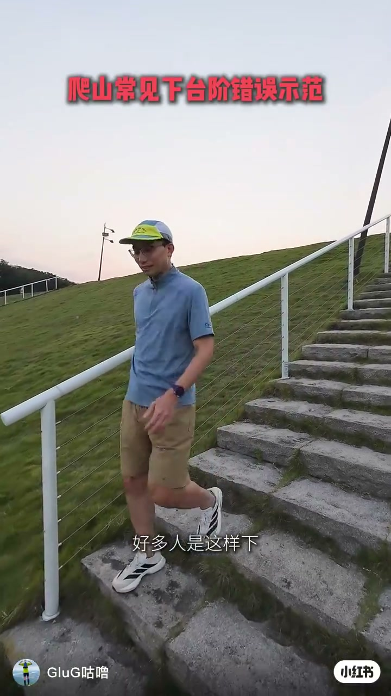
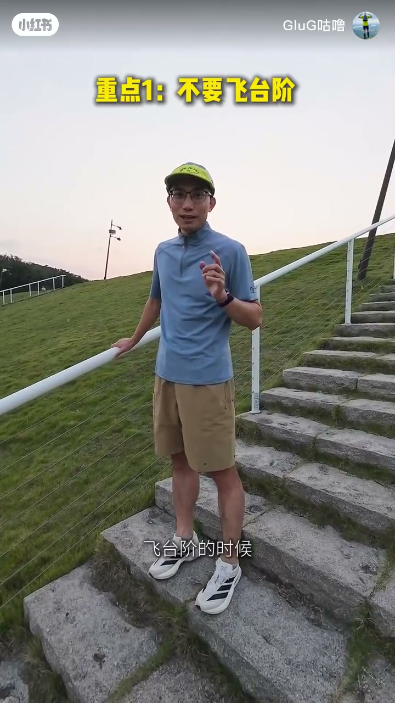
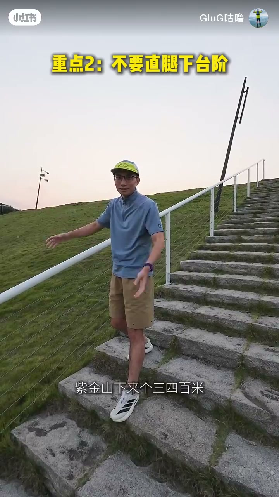
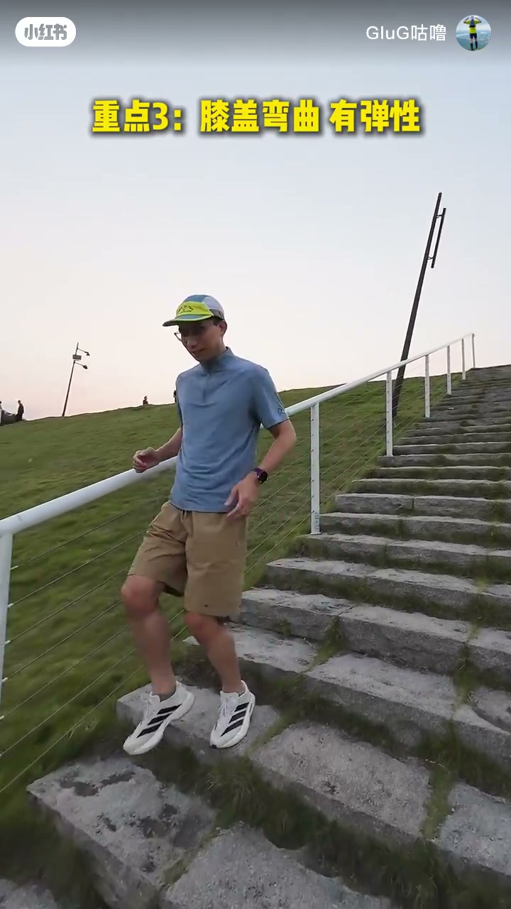
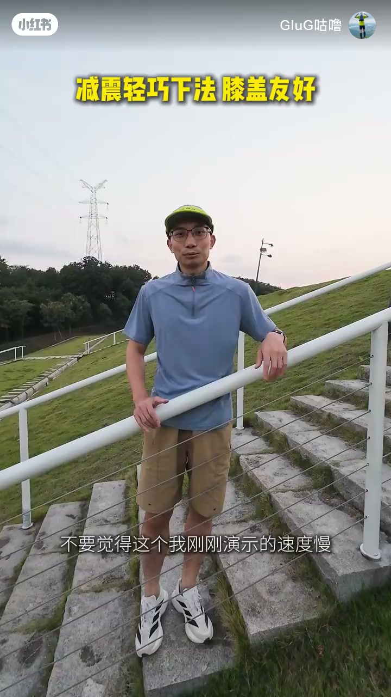
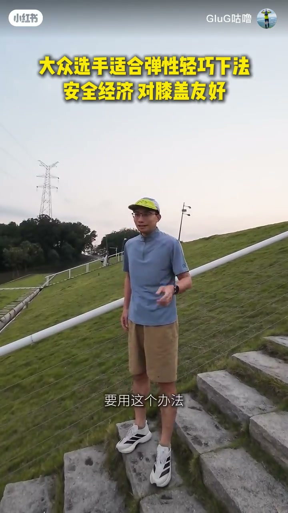

内容要点
「GluG咕噜」在户外石阶上用约 2 分 44 秒对比三种下台阶姿势。Whisper 几乎只认出开场「好多人是这样下」，中后段大量空段与乱码；正文依据画面黄字重点、字幕与笔记文案重建，不把乱码当口播引用。核心对照轴是：飞蹦与直腿打桩对膝盖硬冲击，髋膝弯曲的弹性减震下法更适合大众选手。
知识结构
红字「爬山常见下台阶错误示范」，先展示很多人会采用的腾空/飞蹦下法。
重点1不要飞台阶；重点2不要直腿下台阶——长距离下山时直腿像打桩，重量砸在膝盖上。
重点3膝盖弯曲有弹性；对照打桩式错误示范后，推出「减震轻巧下法 膝盖友好」。
强调大众水平选手不要飞台阶；结尾推荐弹性轻巧下法——安全、经济、对膝盖友好。
下山台阶先抄三条：别飞蹦、别直腿打桩、保持髋膝弯曲有弹性。业余选手优先用减震轻巧下法，而不是用「看起来快」的飞台阶换膝盖硬冲击。
00:00-00:20开场：常见错误下法
视频以红字标题「爬山常见下台阶错误示范」开场。作者在石阶上做出腾空下阶动作，叠白字「好多人是这样下」——这是全片唯一被 Whisper 稳定识别的口播。随后画面还叠过「不会下台阶爬山膝盖疼」一类问题陈述，把话题钉在：台阶看着简单，下法不对就会伤膝盖。约 00:14 附近插入过一帧测试图卡，属素材断层，正文不据此解读动作。

00:20-00:52重点1与2：不要飞台阶、不要直腿
进入讲解段后，黄字打出「重点1：不要飞台阶」。笔记文案补充：双脚离地往下蹦看着快，每一次落地都是对膝盖的硬冲击，路况复杂时还容易崴脚、摔倒。作者随后说要用「友好一点」的方式、一步一步下，把对照从飞蹦转向可控落脚。
接着黄字切换为「重点2：不要直腿下台阶」，并提到紫金山一类长距离下山场景。笔记描述直腿像打桩：膝盖不打弯，身体重量压在膝盖上，走久了既不舒服又生硬。两段禁令共同框出「冲击」与「刚性承重」两个风险轴。


00:52-01:50重点3：屈膝有弹性，对照打桩与减震下法
黄字进入「重点3：膝盖弯曲有弹性」。作者在石阶上做出明显屈膝下阶，字幕强调「要这样子弯曲才能保护膝关节」。随后出现「打桩式下台阶 错误示范」叠字对照，把直腿硬砸姿态再钉一次；再转入「减震轻巧下法 膝盖友好」，把正确方案命名出来。作者提醒不要觉得演示速度慢——含义是：轻巧可控优先于看起来快。


01:50-02:44大众选手勿飞台阶，收束推荐弹性轻巧下法
后半段红字强调「大众水平选手不要飞台阶」，把受众钉在业余/大众而非专业竞速场景。结尾黄字收束：「大众选手适合弹性轻巧下法」「安全经济 对膝盖友好」，字幕「要用这个办法」。视频未给出屈膝角度数值或具体步频标准；可核验的是三条屏幕禁令/推荐与笔记对三种姿势的分条对比。
